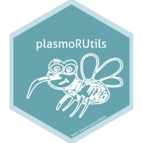

Introduction to plasmoRUtils
Rohit Satyam
King Abdullah University of Science & Technology, Saudi ArabiaAlberto Maillo
King Abdullah University of Science & Technology, Saudi ArabiaDavid Gomez-Cabrero
King Abdullah University of Science & Technology, Saudi ArabiaArnab Pain
King Abdullah University of Science & Technology, Saudi Arabia08 July, 2026
Source:vignettes/Introduction_to_plasmoRUtils.Rmd
Introduction_to_plasmoRUtils.RmdAbstract
The package plasmoRUtils is designed to enable
users to access various Plasmodium and
Apicomplexan-related databases through single-line R functions. It
also provides convenience functions for rapid analysis.
Installation
Before downloading the package, install the following dependencies.
## Easiest way to install package and it's dependencies
pak::pkg_install("Rohit-Satyam/plasmoRUtils", dependencies = TRUE)
cranpkgs <- c('BiocManager','randomcoloR', 'janitor', 'readr', 'rlang', 'dplyr', 'rvest', 'easyPubMed', 'plyr', 'scales', 'ggplot2', 'tidyr', 'tibble', 'data.table', 'plotly', 'purrr', 'stringr', 'S4Vectors', 'echarts4r', 'magrittr', 'bio3d', 'httr2', 'jsonlite', 'gt', 'mgsub', 'reshape2','pathfindR')
install.packages(setdiff(cranpkgs, rownames(installed.packages())), dependencies = TRUE)
biocpkgs <- c("rmarkdown","pRoloc","knitr","BiocStyle","DESeq2","styler","utils","IRanges","BiocGenerics","rtracklayer","scuttle","txdbmaker","topGO","drawProteins","GenomicFeatures","biomaRt","AnnotationForge","Biostrings","GenomeInfoDb","SingleCellExperiment","SingleR","NOISeq","GenomicRanges","BSgenome")
BiocManager::install(setdiff(biocpkgs, rownames(installed.packages())), dependencies = TRUE)The plasmoRUtils package is available on CRAN and can be installed as follows:
install.packages("plasmoRUtils")
# Once installed load the library as
library(plasmoRUtils)
## To re-check if all the dependencies that are required by plasmoRUtils are installed
install_dependencies()Introduction
Using plasmoRUtils, users can fetch data from VEuPathDB and its 12 component sites databases (VEuPathDBs) and transform it into formats compatible with other R packages in a straightforward manner. Data tables (both preconfigured and user-configured) can be downloaded from VEuPathDBs directly within R/RStudio, thanks to a variety of R functions and the RESTful API provided by VEuPathDBs.
For databases that lack APIs, we developed database-specific “searchX” functions (where X represents the database) that utilize the rvest package for web crawling to retrieve data, which is then transformed into tables that can be saved and shared. Additionally, we created a function to enable programmatic access to the MPMP database for the first time, allowing users to download and share data tables at their convenience. The package also provides several other data sets that we reanalyzed using the latest annotations from VEuPathDBs that can be used by various functions.
Databases covered includes:
- HitPredict
- ApicoTFDB
- Malaria.tools
- Malaria Parasite Metabolic Pathways (MPMP) database
- Malaria Important Interacting Proteins (MIIP)
- Phenoplasm
- Malaria Cell Atlas, etc. For exhaustive list, see subsections below.
# Load package and some other useful packages by using
suppressPackageStartupMessages(
suppressWarnings({
library(plasmoRUtils)
library(dplyr)
library(plyr)}))Accessing databases with plasmoRUtils search functions
plasmoRUtils package have several search function to fetch information from databases. The functions are tabulated below:
| Function | Database Access |
|---|---|
searchApicoTFdb() |
ApicoTFdb |
searchRS() |
Research Square |
searchHP() |
Hit Predict |
searchIpDb() |
InParanoiDb |
searchKipho() |
KiPho Database |
searchMidb() |
Minor Intron Database |
searchMiip() |
Malaria Important Interacting Proteins |
searchPM() |
PubMed |
searchPhPl() |
PhenoPlasm |
searchTedConsensus() |
The Encyclopedia of Domains |
searchApidoTFdb()
This function helps user fetch the all the transcription factors for a particular apicomplexan of interest from ApicoTFDb(Sardar et al. 2019). For ease of usage the organism names have been abbreviated as follows in the Table below:
| Category | Abbreviation | Species |
|---|---|---|
| Plasmodium Species | pb | Plasmodium berghii |
| pv | Plasmodium vivax | |
| pf | Plasmodium falciparum | |
| pk | Plasmodium knowlesi | |
| py | Plasmodium yoelii | |
| pc | Plasmodium chabaudi | |
| Other Apicomplexan | tg49 | Toxoplasma Gondii ME49 |
| tg89 | Toxoplasma Gondii P89 | |
| cp | Cryptosporidium parvum | |
| em | Eimeria maxima | |
| bb | Babesia bovis | |
| et | Eimeria tenella | |
| nu | Neospora caninum | |
| cy | Cyclospora cayetanensis |
Using the function is relatively easy and can be achieved as
## Searching all plasmodium TFs
searchApicoTFdb(org="pf") %>% head()
#> # A tibble: 6 × 4
#> `Gene ID` `Protein Length` `Product Description` `TF- Family`
#> <chr> <chr> <chr> <chr>
#> 1 PF3D7_1319600 1633 ACDC domain-containing protein, p… AP2
#> 2 PF3D7_0604100 1979 AP2 domain transcription factor AP2
#> 3 PF3D7_1222400 2558 AP2 domain transcription factor AP2
#> 4 PF3D7_1222600 2432 AP2 domain transcription factor A… AP2
#> 5 PF3D7_1408200 1702 AP2 domain transcription factor A… AP2
#> 6 PF3D7_1007700 1597 AP2 domain transcription factor A… AP2
## Searching all cyclospora TFs
searchApicoTFdb(org="tg49") %>% head()
#> # A tibble: 6 × 4
#> `Gene ID` `Product Description` `Protein Length` `TF- Family`
#> <chr> <chr> <chr> <chr>
#> 1 TGME49_200385 Myb family DNA-binding domain-con… 2258 Myb/SANT
#> 2 TGME49_201220 zinc finger protein 603 BBOX
#> 3 TGME49_201790 FHA domain-containing protein 556 FHA
#> 4 TGME49_202690 DNA-directed RNA polymerase II RP… 250 General-TF
#> 5 TGME49_202840 FHA domain-containing protein 1044 FHA
#> 6 TGME49_202900 zinc finger (CCCH type) motif-con… 1298 Zn-Finger
## Fetch all Experimentally validated TRs
searchApicoTFdb(fetch = "exptfs") %>% head()
#> # A tibble: 6 × 7
#> Gene_ID Source Author Year Product Pubmed Orthologous_Groups
#> <chr> <chr> <chr> <chr> <chr> <chr> <chr>
#> 1 cgd2_3490 PBM DeSilva 2008 AP2/ERF domain… 18541… OG5_147419
#> 2 NCLIV_058430 PBM Campbell 2010 unspecified pr… 21060… OG5_241106
#> 3 NCLIV_059950 PBM Campbell 2010 unspecified pr… 21060… OG5_241143
#> 4 PBANKA_0102900 PBM DeSilva 2008 AP2 domain tra… 18541… OG5_150514
#> 5 PBANKA_0214400 PBM Campbell 2010 AP2 domain tra… 21060… OG5_157023
#> 6 PBANKA_0905900 PBM Campbell 2010 AP2 domain tra… 21060… OG5_154773
searchRS()
Sometimes, it is difficult to keep track of the corpus while you are
working on your gene of interest and you might want to keep up with your
competing groups across the globe. searchRS() function can
help you screen preprint corpus available at Research Square where your
gene ID of interest has been mentioned and return the results in form of
a data frame.
hits <- searchRS(
geneID = "PfAP2-I",
org = "Plasmodium falciparum",
gene_aliases = c(
"Pf AP2-I",
"pfap2-i",
"PF3D7_1007700",
"Apetala 2 Invasion",
"AP2-I transcription factor"
),
org_aliases = c(
"P. falciparum",
"3D7",
"malaria parasite"
),
max_pages = 10
)
hits
#> # A tibble: 3 × 10
#> article_identity title authors posted_at status journal_title article_type
#> <chr> <chr> <chr> <chr> <chr> <chr> <chr>
#> 1 rs-1318124 In Silic… David … 2022-02-… posted Research Squ… Research Ar…
#> 2 rs-3600 Hierarch… Riëtte… 2019-11-… publi… BMC Genomics Research ar…
#> 3 rs-382644 Highly E… Tsubas… 2021-04-… under… Scientific R… Research Ar…
#> # ℹ 3 more variables: full_url <chr>, has_gene <lgl>, has_org <lgl>
searchHP()
This function enables you to search HitPredict(López et al.
2015) database and procure high-confidence Protein-Protein
interactions(PPI) for your organism of interest. All it requires is a
gene ID and taxon ID. HitPredict database provides PPI data in form of
Uniprot IDs which are not always ideal for apicomplexan biologists.
Therefore, we provide functionality to convert these Uniprot IDs back to
gene IDs by setting uniprotToGID=TRUE . Since the only
apicomplexan in HitPredict is
Plasmodium falciparum this gene ID mapping
conversion functionality is only limited for Plasmodium. It should be
turned off, when using it for non-apicomplexan organism as shown
below.
## Single gene query
searchHP("PF3D7_0418300") %>% head()
#> Interactor Interaction Name Experiments Category Method Score
#> 1 A0A5K1K7X4 47066 A0A5K1K7X4 1 High-throughput 0.35
#> 2 C0H4E0 86712 C0H4E0 1 High-throughput 0.39
#> 3 C0H4U4 86784 C0H4U4 1 High-throughput 0.39
#> 4 C0H586 86859 C0H586 1 High-throughput 0.39
#> 5 C0H5G3 86921 C0H5G3 1 High-throughput 0.39
#> 6 Q8I398 1301310 Q8I398 1 High-throughput 0.49
#> Annotation Score Interaction Score Confidence QueryID Gene ID
#> 1 0.16 0.238 Low PF3D7_0418300 PF3D7_0532100
#> 2 0.16 0.251 Low PF3D7_0418300 PF3D7_0515400
#> 3 0.16 0.251 Low PF3D7_0418300 PF3D7_0813300
#> 4 0.16 0.251 Low PF3D7_0418300 PF3D7_0933200
#> 5 0.16 0.251 Low PF3D7_0418300 PF3D7_1341300
#> 6 0.16 0.282 High PF3D7_0418300 PF3D7_0905100
## To use it for other organism, turn off uniprotToGID and provide taxid of the organism
test <- searchHP("BRCA1",taxid = "3702" , uniprotToGID = FALSE)
## Multiple gene query
res <- lapply(c("PF3D7_0418300","PF3D7_1118500"), function(x){searchHP(x,uniprotToGID = FALSE)})%>% plyr::ldply()
res %>% tail()
#> Interaction Interactor Name Experiments Category Method Score
#> 15 86921 C0H5G3 C0H5G3 1 High-throughput 0.39
#> 16 47066 A0A5K1K7X4 A0A5K1K7X4 1 High-throughput 0.35
#> 17 1301321 Q9U0N1 Q9U0N1 1 High-throughput 0.35
#> 18 1303056 Q8IJG6 Q8IJG6 1 High-throughput 0.49
#> 19 91252 C6KTD2 SET1 1 High-throughput 0.39
#> 20 1301317 Q8I1Q4 Q8I1Q4 1 High-throughput 0.49
#> Annotation Score Interaction Score Confidence QueryID
#> 15 0.16 0.251 Low PF3D7_0418300
#> 16 0.16 0.238 Low PF3D7_0418300
#> 17 0.16 0.238 Low PF3D7_0418300
#> 18 0.50 0.494 High PF3D7_1118500
#> 19 0.50 0.439 High PF3D7_1118500
#> 20 0.16 0.282 High PF3D7_1118500
## You can now use toGeneid function which uses PlasmoDB release 68 annotation to
## map the uniprot IDs back to the gene IDs
toGeneid(res$Interactor,from = "uniprot","ensembl") %>% full_join(., res, by = c("UniProt ID(s)" = "Interactor"))
#> # A tibble: 20 × 11
#> `Gene ID` `UniProt ID(s)` Interaction Name Experiments Category
#> <chr> <chr> <int> <chr> <int> <chr>
#> 1 PF3D7_0113000 Q9U0N1 1301321 Q9U0N1 1 High-throug…
#> 2 PF3D7_0418300 Q8I1Q4 1301317 Q8I1Q4 1 High-throug…
#> 3 PF3D7_0515400 C0H4E0 86712 C0H4E0 1 High-throug…
#> 4 PF3D7_0526800 Q8I3J7 1301311 Q8I3J7 1 High-throug…
#> 5 PF3D7_0532100 A0A5K1K7X4 47066 A0A5K1K7X4 1 High-throug…
#> 6 PF3D7_0629700 C6KTD2 91252 SET1 1 High-throug…
#> 7 PF3D7_0802000 Q8IAM0 1301313 Q8IAM0 1 High-throug…
#> 8 PF3D7_0813300 C0H4U4 86784 C0H4U4 1 High-throug…
#> 9 PF3D7_0825500 Q8IB88 1301314 Q8IB88 1 High-throug…
#> 10 PF3D7_0905100 Q8I398 1301310 Q8I398 1 High-throug…
#> 11 PF3D7_0933200 C0H586 86859 C0H586 1 High-throug…
#> 12 PF3D7_1023900 Q8IJG6 1301319 Q8IJG6 1 High-throug…
#> 13 PF3D7_1023900 Q8IJG6 1303056 Q8IJG6 1 High-throug…
#> 14 PF3D7_1112100 Q8IIP2 1301318 Q8IIP2 1 High-throug…
#> 15 PF3D7_1118500 Q8III3 1301317 Q8III3 1 High-throug…
#> 16 PF3D7_1228600 Q8I5D2 1301312 MSP9 1 High-throug…
#> 17 PF3D7_1302700 Q8IET8 1301316 Q8IET8 1 High-throug…
#> 18 PF3D7_1309400 Q8IEM0 1301315 Q8IEM0 1 High-throug…
#> 19 PF3D7_1341300 C0H5G3 86921 C0H5G3 1 High-throug…
#> 20 PF3D7_1468100 Q8IKF6 1301320 Q8IKF6 1 High-throug…
#> # ℹ 5 more variables: `Method Score` <dbl>, `Annotation Score` <dbl>,
#> # `Interaction Score` <dbl>, Confidence <chr>, QueryID <chr>Another scenario where users might be interested in setting
uniportToGID=FALSE might be when they are querying
thousands of IDs. Since ID conversion is carried out using biomaRt,
it might be redundant to convert same Uniprot ID multiple times if it
has multiple interacting partners.
For convenience, we therefore provide another function
toGeneid() which will quickly converts the Uniprot IDs back
to Ensembl IDs.
searchIpDb()
This function enables you to search InParanoiDB 9 (Persson and Sonnhammer
2023) database and procure high-confidence orthologs for your
organism of interest. The input required is a character vector of gene
IDs or Uniprot IDs. In case of gene IDs, the ids are converted to
Uniprot IDs first to comply with InParanoiDB API query format. We only
provide gene ID to Uniprot ID conversion for organisms that are covered
by VEuPathDB as searchIpDb() function use our own
toGeneid() function to fetch all Uniprot IDs. Users can
separately convert their gene IDs to uniprot IDs as well using other R
packages such as biomaRt R
package.
## Using Gene IDs
searchIpDb( c("PF3D7_0807800", "PF3D7_1023900")) %>% head()
#> success Q8IAR6
#> success Q8IJG6
#> # A tibble: 6 × 10
#> `#Unique_group_id` Species TaxID Protein Gene_name Score Inparalog_score
#> <dbl> <chr> <dbl> <chr> <chr> <dbl> <dbl>
#> 1 67442957 Perkinsus m… 423536 C5LD32 Pmar_PMA… 126 1
#> 2 67442957 Perkinsus m… 423536 C5L7W9 Pmar_PMA… 126 0.397
#> 3 67442957 Plasmodium … 36329 Q8IAR6 PF3D7_08… 126 1
#> 4 71821781 Plasmodium … 126793 A5KAC7 PVX_0881… 515 1
#> 5 71821781 Plasmodium … 36329 Q8IAR6 PF3D7_08… 515 1
#> 6 135850834 Plasmodium … 36329 Q8IAR6 PF3D7_08… 179 1
#> # ℹ 3 more variables: Seed_score <dbl>, Description <chr>, queryid <chr>
## Using uniprot IDs
searchIpDb( c("C5LD32", "A5KAC7"),idtype = "uniprot") %>% head()
#> success C5LD32
#> success A5KAC7
#> # A tibble: 6 × 10
#> `#Unique_group_id` Species TaxID Protein Gene_name Score Inparalog_score
#> <dbl> <chr> <dbl> <chr> <chr> <dbl> <dbl>
#> 1 1360218 Perkinsus m… 4.24e5 C5LD32 Pmar_PMA… 171 1
#> 2 1360218 Perkinsus m… 4.24e5 C5L7W9 Pmar_PMA… 171 0.354
#> 3 1360218 Dentipellis… 1.88e6 A0A5B1… DENSPDRA… 171 1
#> 4 2468578 Oryzias lat… 8.09e3 H2M0M9 LOC10117… 158 1
#> 5 2468578 Perkinsus m… 4.24e5 C5LD32 Pmar_PMA… 158 1
#> 6 2468578 Oryzias lat… 8.09e3 H2L3R1 LOC10115… 158 0.759
#> # ℹ 3 more variables: Seed_score <dbl>, Description <chr>, queryid <chr>You might see some of the Uniprot ID failing such as
Q2KNU4 and Q2KNU5 and their respective URLs.
These Uniprot IDs are missing from the InParanoiDB 9 database either
because either they are old and discontinued or missing from the
database. When converting gene IDs to Uniprot IDs, this function try
querying all the Uniprot IDs provided by VEuPathDB.
searchKipho()
This functions let you fetch the Malaria Parasite Kinome-Phosphatome Resource (KiPho) database (Pandey et al. 2017) without leaving R. The organism in KiPho includes (see below):
| Abbreviation | Species |
|---|---|
| pb | Plasmodium berghii |
| pv | Plasmodium vivax |
| pf | Plasmodium falciparum |
| pc | Plasmodium chabaudi |
Beside the organism, user needs to specify type="kinase"
to fetch the Kinome and "type=phosphatase" to fetch
Phosphatome.
searchKipho(org="pf",type = "kinase")
#> # A tibble: 148 × 7
#> `Gene ID` `Previous ID(s)` `Product Description` `Protein Length`
#> <chr> <chr> <chr> <int>
#> 1 PF3D7_0102600 PFA0130c;MAL1P1.17 serine/threonine protein k… 630
#> 2 PF3D7_0103700 PFA0185w;MAL1P1.23 L-seryl-tRNA(Sec) kinase, … 535
#> 3 PF3D7_0107600 PFA0380w;MAL1P2.04 serine/threonine protein k… 1595
#> 4 PF3D7_0110600 PFA0515w;MAL1P2.32 phosphatidylinositol-4-pho… 1710
#> 5 PF3D7_0110900 PFA0530c;MAL1P2.35 adenylate kinase-like prot… 186
#> 6 PF3D7_0111500 PFA0555c;MAL1P2.40 UMP-CMP kinase, putative 371
#> 7 PF3D7_0203100 PFB0150c;PF02_0030 protein kinase, putative 2485
#> 8 PF3D7_0211700 PFB0520w;PF02_0109 tyrosine kinase-like prote… 1233
#> 9 PF3D7_0213400 PFB0605w;PF02_0125 protein kinase 7 (PK7) 343
#> 10 PF3D7_0214600 PFB0665w;PF02_0137 serine/threonine protein k… 1714
#> # ℹ 138 more rows
#> # ℹ 3 more variables: `Conserved Protein Domain Family(Accession No)` <chr>,
#> # `Conserved Protein Domain Family(Name)` <chr>, `Ortholog Group` <chr>
searchKipho(org="pf",type = "phosphatase")
#> # A tibble: 70 × 7
#> `Gene ID` `Previous ID(s)` `Product Description` `Protein Length`
#> <chr> <chr> <chr> <int>
#> 1 PF3D7_0107200 PFA0350w;MAL1P1.64 carbon catabolite represso… 337
#> 2 PF3D7_0107800 PFA0390w double-strand break repair… 1233
#> 3 PF3D7_0303200 PFC0150w HAD superfamily protein pu… 1162
#> 4 PF3D7_0305600 PFC0250c AP endonuclease (DNA-[apur… 617
#> 5 PF3D7_0309000 PFC0380w dual specificity protein p… 575
#> 6 PF3D7_0310300 PFC0430w phosphoglycerate mutase pu… 1165
#> 7 PF3D7_0314400 PFC0595c serine/threonine protein p… 308
#> 8 PF3D7_0319200 PFC0850c endonuclease/exonuclease/p… 906
#> 9 PF3D7_0322100 PFC0980c RNA triphosphatase (Prt1) 591
#> 10 PF3D7_0410300 PFD0505c;PFD0510c protein phosphatase PPM1 p… 906
#> # ℹ 60 more rows
#> # ℹ 3 more variables: `Conserved Protein Domain Family(Accession_No)` <chr>,
#> # `Conserved Protein Domain Family(Name)` <chr>, `Ortholog Group` <chr>
searchMidb()
This function enables you to fetch minor-introns information from MiDB database in bulk. By default, all intron classes are fetched (major-like, major_hybrid, minor-like, minor_hybrid, non-canonical). For more information on minor introns visit MiDB database.
## Let's see what organisms are present in MiDB
data("midbSpecies")
df <- searchMidb("Toxoplasma gondii ME49")
df %>% head()
searchMiip()
This function enables you to fetch Protein-protein interaction pairs of Plasmodium falciparum and the respective stage (sexual and asexual) they interact from MIIP database.
searchMiip(c("PF3D7_0807800","PF3D7_1023900"))
#> # A tibble: 4 × 5
#> interactorA descriptionA interactorB descriptionB stage
#> <chr> <chr> <chr> <chr> <chr>
#> 1 PF3D7_0807800 26S proteasome regulatory subuni… PF3D7_0710… conserved P… game…
#> 2 PF3D7_1023900 chromodomain-helicase-DNA-bindin… PF3D7_1014… protein KIC8 game…
#> 3 PF3D7_1023900 chromodomain-helicase-DNA-bindin… PF3D7_1138… protein KIC5 ring
#> 4 PF3D7_1335100 merozoite surface protein 7 PF3D7_1023… chromodomai… schi…
searchPM()
Aside from searchGSC you can also use
searchPM() to fetch literature information where your gene
IDs of interest have been mentioned. This will however limit the search
to title abstract and keywords. In the background, it makes use of
easyPubMed() functions such as get_pubmed_ids
and articles_to_list and then transforms the output in form
of a table that is easy explore
searchPM(geneID = c("PF3D7_0420300","PF3D7_0621000"))
#> PubMed Query used for PF3D7_0420300 was:
#> ("Plasmodium falciparum"[All Fields] AND "PF3D7_0420300"[tiab:~0]) AND (2010[PDAT] : 2026[PDAT])
#> pmid doi pmc jabbrv lang year month
#> 1 39412522 10.7554/eLife.92201 PMC11483127 Elife eng 2024 10
#> 2 30526479 10.1186/s12864-018-5257-x PMC6288915 BMC Genomics eng 2018 12
#> day
#> 1 16
#> 2 10
#> title
#> 1 A Plasmodium falciparum MORC protein complex modulates epigenetic control of gene expression through interaction with heterochromatin.
#> 2 Schizont transcriptome variation among clinical isolates and laboratory-adapted clones of the malaria parasite Plasmodium falciparum.
#> GeneID
#> 1 PF3D7_0420300
#> 2 PF3D7_0420300Gene IDs for which no results are available will be shown on the
screen. However, when a query is successful, the function also prints
the exact query that can be used by you for reproducibility purposes.
This behavior can be turned off if you have a lot of gene IDs using
verbose=FALSE.
"Plasmodium falciparum"[All Fields] AND "PF3D7_0420300"[Title/Abstract:~0] AND 2010/01/01:2025/12/31[Date - Publication]
searchPhPl()
This convenience function allow users to fetch Disruptability and
Mutant Phenotypes tables for gene of interest from PhenoPlasm database.
fetch=1 helps fetch the Disruptability and
fetch=2 helps fetch the Mutant Phenotype table.
searchPhPl(geneID = c("PF3D7_0420300","PF3D7_0621000","PF3D7_0523800"), org="pf") %>% head()
#> [1] "PF3D7_0420300"
#> [1] "PF3D7_0621000"
#> [1] "PF3D7_0523800"
#> Species Disruptability Reference
#> 1 P. berghei ANKA Refractory RMgm-4087
#> 2 P. berghei ANKA Refractory PlasmoGEM (Barseq)
#> 3 P. yoelii yoelii 17X Possible RMgm-4391
#> 4 P. falciparum 3D7 Refractory USF piggyBac screen (Insert. mut.)
#> 5 P. falciparum 3D7 Refractory USF piggyBac screen (Insert. mut.)
#> 6 P. falciparum 3D7 Refractory 354041168 ko attempts failed
#> Submitter QueryGID
#> 1 Imported from RMgmDB PF3D7_0420300
#> 2 PlasmoGEM PF3D7_0420300
#> 3 Imported from RMgmDB PF3D7_0420300
#> 4 USF PiggyBac Screen PF3D7_0621000
#> 5 USF PiggyBac Screen PF3D7_0523800
#> 6 Theo Sanderson, Francis Crick Institute PF3D7_0523800
searchPhPl(geneID = c("PF3D7_0420300","PF3D7_0621000","PF3D7_0523800"), org="pf", fetch=2) %>% head()
#> Species Stage Phenotype Reference Submitter
#> 1 P. yoelii yoelii 17X Asexual No difference RMgm-4391 Imported from RMgmDB
#> 2 P. yoelii yoelii 17X Gametocyte No difference RMgm-4391 Imported from RMgmDB
#> 3 P. yoelii yoelii 17X Ookinete No difference RMgm-4391 Imported from RMgmDB
#> 4 P. yoelii yoelii 17X Oocyst No difference RMgm-4391 Imported from RMgmDB
#> 5 P. yoelii yoelii 17X Sporozoite No difference RMgm-4391 Imported from RMgmDB
#> 6 P. yoelii yoelii 17X Liver No difference RMgm-4391 Imported from RMgmDB
#> QueryGID
#> 1 PF3D7_0420300
#> 2 PF3D7_0420300
#> 3 PF3D7_0420300
#> 4 PF3D7_0420300
#> 5 PF3D7_0420300
#> 6 PF3D7_0420300Oftentimes, you would like to get the summary table like the one
plotted in PhenoPlasm that combines both Disruptability and Mutant
Phenotype information. Rather than using screen grab to get the snapshot
of the table, one can now download the table from Advanced Search
button by submitting the geneIDs of interest and can feed that file to
easyPhplplottbl() function of plasmoRUtils to
render such table from the phenotype.txt files directly
# Read the file
df <- read.csv("phenotype.txt", skip = 2, sep = "\t") %>%
dplyr::select(-3, -4) %>% #remove the empty cols: GeneLocalisation and OrthologLocalisation
dplyr::rename_with(~ gsub("Sprozoite", "Sporozoite", .x)) #Correct the colnames
easyPhplplottbl(df)
## Or you can pass the file path directly
easyPhplplottbl("phenotype.txt")
#Load sample data (subset of genes from phenotype.txt file above)
data(pf3d7PhplTable)
easyPhplplottbl(pf3d7PhplTable)| Gene | Asexual | Gametocyte | Liver | Oocyte | Ookinete | Sporozoite | Viability |
|---|---|---|---|---|---|---|---|
| PF3D7_0105200 | ❌ | ✔ ❌ | |||||
| PF3D7_0105300 | ✅ | ✅ | ❗ | ❗ | ✅ | ❗ | ❌ ✔ |
| PF3D7_0105400 | ❗ | ✔ | |||||
| PF3D7_0217500 | ⟴ 🟥 ✅ | ❗ | ❗ | ❌ ✔ ❌ | |||
| PF3D7_1337800 | ❗ 🟥 ❗ | ❌ ❌ |
Windows users might face issues saving these plots as pdf directly in which case, the tables can be saved as HTML files which can then be converted to SVG or PDF formats using various online converters to combine them with other plots.
Note: As per Phenotype taxonomy of Phenoplasm, the database uses “D” for both
Difference from wild-typeandEgress defectwhich is confusing and difficult to resolve programmatically. An example of this isPF3D7_1337800that have “D S D” in the “Gene Asexual”. While we have requested the database maintainer to fix this, please watch out for borderline cases like these.
searchTedConsensus()
This function helps users fetch the domain information from
The Encyclopedia of Domains database given set of
uniprot IDs. Usually these table contains a numeric CATH labels which
are difficult to comprehend and user has to click on them one by one to
find the domain name. We enable conversion of these CATH labels to
description using returnCATHdesc=TRUE. This will try to
scrap the labels for given CATH label from CATH database wherever
possible.
searchTedConsensus(c("Q7K6A1","Q8IAP8","C0H4D0","C6KT90","Q8IBJ7"), returnCATHdesc=FALSE)
#> ted_id uniprot_acc md5_domain
#> 1 AF-Q7K6A1-F1-model_v4_TED01 Q7K6A1 b99e920f0ded31aa96af0ef9be1338f4
#> 2 AF-C0H4D0-F1-model_v4_TED01 C0H4D0 cd912dcbbb5d070cbb254c0a88278fe4
#> 3 AF-C6KT90-F1-model_v4_TED02 C6KT90 70d20592d9f682bff23dc6188f318244
#> 4 AF-C6KT90-F1-model_v4_TED01 C6KT90 7cc174ebefe723733b6e63508fd23a9e
#> 5 AF-Q8IBJ7-F1-model_v4_TED01 Q8IBJ7 71697d50571d5fe2331a13ff16503478
#> consensus_level chopping nres_domain num_segments plddt
#> 1 high 6-376 371 1 97.1740
#> 2 medium 55-153 99 1 88.9028
#> 3 medium 322-382 61 1 45.3118
#> 4 medium 172-203 32 1 48.8553
#> 5 medium 54-88 35 1 87.3500
#> num_helix_strand_turn num_helix num_strand num_helix_strand num_turn
#> 1 60 16 8 24 35
#> 2 15 5 4 9 6
#> 3 3 3 0 3 0
#> 4 2 1 0 1 1
#> 5 5 0 3 3 2
#> proteome_id cath_label cath_assignment_level cath_assignment_method
#> 1 36329 3.40.800.20 H foldseek
#> 2 36329 3.30.70.2380 H foldseek
#> 3 36329 4.10.860 T foldclass
#> 4 36329 1.20.5 T foldclass
#> 5 36329 - - -
#> packing_density norm_rg tax_common_name tax_scientific_name
#> 1 13.064 0.298 Plasmodium falciparum (isolate 3D7)
#> 2 12.537 0.306 Plasmodium falciparum (isolate 3D7)
#> 3 9.900 0.374 Plasmodium falciparum (isolate 3D7)
#> 4 8.900 0.403 Plasmodium falciparum (isolate 3D7)
#> 5 9.833 0.370 Plasmodium falciparum (isolate 3D7)
#> tax_lineage
#> 1 cellular organisms, Eukaryota, Sar, Alveolata, Apicomplexa, Aconoidasida, Haemosporida, Plasmodiidae, Plasmodium, Plasmodium (Laverania), Plasmodium falciparum
#> 2 cellular organisms, Eukaryota, Sar, Alveolata, Apicomplexa, Aconoidasida, Haemosporida, Plasmodiidae, Plasmodium, Plasmodium (Laverania), Plasmodium falciparum
#> 3 cellular organisms, Eukaryota, Sar, Alveolata, Apicomplexa, Aconoidasida, Haemosporida, Plasmodiidae, Plasmodium, Plasmodium (Laverania), Plasmodium falciparum
#> 4 cellular organisms, Eukaryota, Sar, Alveolata, Apicomplexa, Aconoidasida, Haemosporida, Plasmodiidae, Plasmodium, Plasmodium (Laverania), Plasmodium falciparum
#> 5 cellular organisms, Eukaryota, Sar, Alveolata, Apicomplexa, Aconoidasida, Haemosporida, Plasmodiidae, Plasmodium, Plasmodium (Laverania), Plasmodium falciparum
searchTedConsensus(c("Q7K6A1","Q8IAP8","C0H4D0","C6KT90","Q8IBJ7"), returnCATHdesc=TRUE)
#> ted_id uniprot_acc md5_domain
#> 1 AF-Q7K6A1-F1-model_v4_TED01 Q7K6A1 b99e920f0ded31aa96af0ef9be1338f4
#> 2 AF-C0H4D0-F1-model_v4_TED01 C0H4D0 cd912dcbbb5d070cbb254c0a88278fe4
#> 3 AF-C6KT90-F1-model_v4_TED02 C6KT90 70d20592d9f682bff23dc6188f318244
#> 4 AF-C6KT90-F1-model_v4_TED01 C6KT90 7cc174ebefe723733b6e63508fd23a9e
#> 5 AF-Q8IBJ7-F1-model_v4_TED01 Q8IBJ7 71697d50571d5fe2331a13ff16503478
#> consensus_level chopping nres_domain num_segments plddt
#> 1 high 6-376 371 1 97.1740
#> 2 medium 55-153 99 1 88.9028
#> 3 medium 322-382 61 1 45.3118
#> 4 medium 172-203 32 1 48.8553
#> 5 medium 54-88 35 1 87.3500
#> num_helix_strand_turn num_helix num_strand num_helix_strand num_turn
#> 1 60 16 8 24 35
#> 2 15 5 4 9 6
#> 3 3 3 0 3 0
#> 4 2 1 0 1 1
#> 5 5 0 3 3 2
#> proteome_id cath_label cath_assignment_level cath_assignment_method
#> 1 36329 3.40.800.20 H foldseek
#> 2 36329 3.30.70.2380 H foldseek
#> 3 36329 4.10.860 T foldclass
#> 4 36329 1.20.5 T foldclass
#> 5 36329 - - -
#> packing_density norm_rg tax_common_name tax_scientific_name
#> 1 13.064 0.298 Plasmodium falciparum (isolate 3D7)
#> 2 12.537 0.306 Plasmodium falciparum (isolate 3D7)
#> 3 9.900 0.374 Plasmodium falciparum (isolate 3D7)
#> 4 8.900 0.403 Plasmodium falciparum (isolate 3D7)
#> 5 9.833 0.370 Plasmodium falciparum (isolate 3D7)
#> tax_lineage
#> 1 cellular organisms, Eukaryota, Sar, Alveolata, Apicomplexa, Aconoidasida, Haemosporida, Plasmodiidae, Plasmodium, Plasmodium (Laverania), Plasmodium falciparum
#> 2 cellular organisms, Eukaryota, Sar, Alveolata, Apicomplexa, Aconoidasida, Haemosporida, Plasmodiidae, Plasmodium, Plasmodium (Laverania), Plasmodium falciparum
#> 3 cellular organisms, Eukaryota, Sar, Alveolata, Apicomplexa, Aconoidasida, Haemosporida, Plasmodiidae, Plasmodium, Plasmodium (Laverania), Plasmodium falciparum
#> 4 cellular organisms, Eukaryota, Sar, Alveolata, Apicomplexa, Aconoidasida, Haemosporida, Plasmodiidae, Plasmodium, Plasmodium (Laverania), Plasmodium falciparum
#> 5 cellular organisms, Eukaryota, Sar, Alveolata, Apicomplexa, Aconoidasida, Haemosporida, Plasmodiidae, Plasmodium, Plasmodium (Laverania), Plasmodium falciparum
#> cath_label_desc
#> 1 Histone deacetylase domain
#> 2
#> 3
#> 4
#> 5 NULLIn the example above, C0H4D0 have CATH label 3.30.70.2380.
But this superfamily doesn’t have a name. Besides, sometimes instead of
Superfamily CATH labels, TED might use CATH-Gene3D Hierarchy. No
description is returned in such cases.
Accessing malaria.tools database.
Some visualization functions have been developed to produce similar visualizations similar to what rendered by malaria.tools database but are publication ready. User can plot Condition Specific and Stage Specific expression of gene of interest in two organisms: Plasmodium falciparum and Plasmodium berghi.
-
plotAllCondition(): This function lets you create publication ready plots of TPM normalized expression values across multiple stages of parasite using bulk-RNAseq data from malaria.tools.
# TPM plot (non-interactive)
plotAllCondition(geneID = "PBANKA_0100600")
plotAllCondition(geneID = "PBANKA_0100600",plotify = TRUE) ## interactive
## To get the data used for making above plot use returnData argument
plotAllCondition(geneID = "PBANKA_0100600",returnData = TRUE) %>% head()Users can also plot stage specific average TPMs as well similar to
the plots rendered in malaria.tools using
plotStageSpecific() function.
plotStageSpecific(geneID = "PBANKA_0100600",plotify = TRUE)Note:
searchMT()function available in previous version has been depreciated due to its repeated failure given the database latency.easyPietherefore has also been removed
Session Info
utils::sessionInfo()
#> R version 4.4.1 (2024-06-14 ucrt)
#> Platform: x86_64-w64-mingw32/x64
#> Running under: Windows 11 x64 (build 26200)
#>
#> Matrix products: default
#>
#>
#> locale:
#> [1] LC_COLLATE=English_India.utf8 LC_CTYPE=English_India.utf8
#> [3] LC_MONETARY=English_India.utf8 LC_NUMERIC=C
#> [5] LC_TIME=English_India.utf8
#>
#> time zone: Asia/Riyadh
#> tzcode source: internal
#>
#> attached base packages:
#> [1] stats graphics grDevices utils datasets methods base
#>
#> other attached packages:
#> [1] plyr_1.8.9 dplyr_1.2.1 plasmoRUtils_1.1.1 rlang_1.3.0
#> [5] readr_2.2.0 janitor_2.2.1 BiocStyle_2.32.1
#>
#> loaded via a namespace (and not attached):
#> [1] segmented_2.2-1 fs_2.1.0
#> [3] ProtGenerics_1.36.0 matrixStats_1.5.0
#> [5] bitops_1.0-9 lubridate_1.9.5
#> [7] pRoloc_1.44.1 httr_1.4.8
#> [9] RColorBrewer_1.1-3 doParallel_1.0.17
#> [11] tools_4.4.1 MSnbase_2.30.1
#> [13] utf8_1.2.6 R6_2.6.1
#> [15] lazyeval_0.2.3 withr_3.0.3
#> [17] prettyunits_1.2.0 gridExtra_2.3.1
#> [19] preprocessCore_1.66.0 cli_3.6.6
#> [21] Biobase_2.64.0 textshaping_1.0.5
#> [23] gt_1.3.0 sass_0.4.10
#> [25] topGO_2.56.0 mvtnorm_1.4-1
#> [27] S7_0.2.2 randomForest_4.7-1.2
#> [29] proxy_0.4-29 pkgdown_2.2.0
#> [31] Rsamtools_2.20.0 systemfonts_1.3.2
#> [33] txdbmaker_1.0.1 AnnotationForge_1.46.0
#> [35] dichromat_2.0-0.1 parallelly_1.48.0
#> [37] limma_3.60.6 rstudioapi_0.19.0
#> [39] impute_1.78.0 RSQLite_3.53.3
#> [41] FNN_1.1.4.1 generics_0.1.4
#> [43] BiocIO_1.14.0 vroom_1.7.1
#> [45] gtools_3.9.5 dendextend_1.19.1
#> [47] GO.db_3.19.1 Matrix_1.7-5
#> [49] MALDIquant_1.22.3 drawProteins_1.24.0
#> [51] S4Vectors_0.42.1 abind_1.4-8
#> [53] lifecycle_1.0.5 yaml_2.3.12
#> [55] snakecase_0.11.1 SummarizedExperiment_1.34.0
#> [57] recipes_1.3.3 SparseArray_1.4.8
#> [59] BiocFileCache_2.12.0 grid_4.4.1
#> [61] blob_1.3.0 promises_1.5.0
#> [63] crayon_1.5.3 PSMatch_1.8.0
#> [65] lattice_0.22-9 beachmat_2.20.0
#> [67] GenomicFeatures_1.56.0 annotate_1.82.0
#> [69] chromote_0.5.1 mzR_2.38.0
#> [71] KEGGREST_1.44.1 pillar_1.11.1
#> [73] knitr_1.51 GenomicRanges_1.56.2
#> [75] rjson_0.2.23 lpSolve_5.6.23
#> [77] future.apply_1.20.2 codetools_0.2-20
#> [79] mgsub_2.0.0 glue_1.8.1
#> [81] pcaMethods_1.96.0 data.table_1.18.4
#> [83] MultiAssayExperiment_1.30.3 vctrs_0.7.3
#> [85] png_0.1-9 gtable_0.3.6
#> [87] kernlab_0.9-33 cachem_1.1.0
#> [89] gower_1.0.2 xfun_0.59
#> [91] prodlim_2026.03.11 S4Arrays_1.4.1
#> [93] coda_0.19-4.1 survival_3.8-6
#> [95] ncdf4_1.24 timeDate_4052.112
#> [97] SingleCellExperiment_1.26.0 iterators_1.0.14
#> [99] hardhat_1.4.3 lava_1.9.2
#> [101] statmod_1.5.2 MLInterfaces_1.84.0
#> [103] ipred_0.9-15 nlme_3.1-169
#> [105] bit64_4.8.2 progress_1.2.3
#> [107] filelock_1.0.3 LaplacesDemon_16.1.8
#> [109] GenomeInfoDb_1.40.1 bslib_0.11.0
#> [111] affyio_1.74.0 irlba_2.3.7
#> [113] rpart_4.1.27 otel_0.2.0
#> [115] colorspace_2.1-2 BiocGenerics_0.50.0
#> [117] DBI_1.3.0 nnet_7.3-20
#> [119] tidyselect_1.2.1 processx_3.9.0
#> [121] bit_4.6.0 compiler_4.4.1
#> [123] curl_7.1.0 rvest_1.0.5
#> [125] httr2_1.2.3 graph_1.82.0
#> [127] SparseM_1.84-2 xml2_1.6.0
#> [129] desc_1.4.3 DelayedArray_0.30.1
#> [131] plotly_4.12.0 bookdown_0.47
#> [133] rtracklayer_1.64.0 scales_1.4.0
#> [135] hexbin_1.28.5 affy_1.82.0
#> [137] rappdirs_0.3.4 stringr_1.6.0
#> [139] digest_0.6.39 mixtools_2.0.0.1
#> [141] rmarkdown_2.31 XVector_0.44.0
#> [143] htmltools_0.5.9 pkgconfig_2.0.3
#> [145] SingleR_2.6.0 sparseMatrixStats_1.16.0
#> [147] MatrixGenerics_1.16.0 dbplyr_2.6.0
#> [149] fastmap_1.2.0 htmlwidgets_1.6.4
#> [151] UCSC.utils_1.0.0 DelayedMatrixStats_1.26.0
#> [153] farver_2.1.2 jquerylib_0.1.4
#> [155] jsonlite_2.0.0 BiocParallel_1.38.0
#> [157] mclust_6.1.3 mzID_1.42.0
#> [159] ModelMetrics_1.2.2.2 BiocSingular_1.20.0
#> [161] RCurl_1.98-1.19 magrittr_2.0.5
#> [163] scuttle_1.14.0 GenomeInfoDbData_1.2.12
#> [165] Rcpp_1.1.2 viridis_0.6.5
#> [167] MsCoreUtils_1.16.1 vsn_3.72.0
#> [169] pROC_1.19.0.1 stringi_1.8.7
#> [171] zlibbioc_1.50.0 MASS_7.3-65
#> [173] listenv_1.0.0 parallel_4.4.1
#> [175] Biostrings_2.72.1 splines_4.4.1
#> [177] hms_1.1.4 igraph_2.3.3
#> [179] QFeatures_1.14.2 reshape2_1.4.5
#> [181] biomaRt_2.60.1 stats4_4.4.1
#> [183] ScaledMatrix_1.12.0 XML_3.99-0.23
#> [185] evaluate_1.0.5 BiocManager_1.30.27
#> [187] selectr_0.6-0 tzdb_0.5.0
#> [189] foreach_1.5.2 tidyr_1.3.2
#> [191] purrr_1.2.2 future_1.70.0
#> [193] clue_0.3-68 bio3d_2.4-5
#> [195] ggplot2_4.0.3 rsvd_1.0.5
#> [197] xtable_1.8-8 restfulr_0.0.17
#> [199] AnnotationFilter_1.28.0 easyPubMed_3.1.6
#> [201] e1071_1.7-17 later_1.4.8
#> [203] viridisLite_0.4.3 class_7.3-23
#> [205] ragg_1.5.2 tibble_3.3.1
#> [207] websocket_1.4.4 memoise_2.0.1
#> [209] AnnotationDbi_1.66.0 GenomicAlignments_1.40.0
#> [211] IRanges_2.38.1 cluster_2.1.8.2
#> [213] globals_0.19.1 timechange_0.4.0
#> [215] caret_7.0-1 sampling_2.11